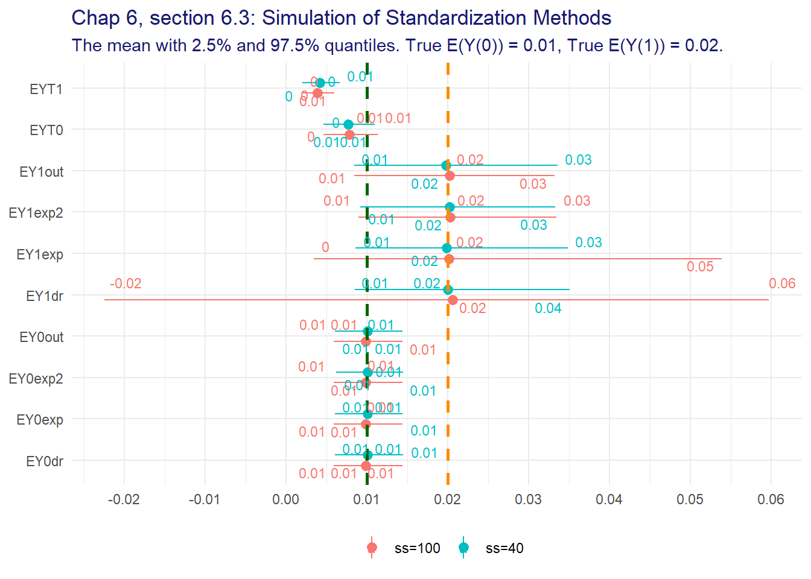

Chapter 6 Backdoor Method via Standardization
library(tidyr)
library(dplyr)
library(dagitty)
library(ggplot2)
library(ggdag)
library(gt)
library(geepack)6.1 Standardization via Outome Modeling
Standardization vis via outcome modelingis one way to estimate \(E(Y(t))\)
\[ \begin{align*} &\text{by double expectation theorem} \\ E(Y(t)) &= E_H E(Y(t) \mid H) \\ &\text{by independence of T given H, (6.1)} \\ &= E_HE(Y(t) \mid T=t, H) \\ &\text{by consistency assumption} \\ &= E_HE(Y \mid T=t, H) \end{align*} \]
and with a binary dataset we can write
\[ \begin{align*} E_H E(Y \mid T=t, H) = E(Y \mid T=t, H = 0) P(H = 0) + E(Y \mid T=t, H = 1) P(H = 1) \end{align*} \]
We use R to compute the standardized estimates with the following script
#' Compute standardized estimates
#'
#' Compute standardized estimates.
#'
#' The standardized estimates are computed using the outcome model.
#' IMPORTANT: The formula must be in the format \code{Y ~ T + ...}.
#'
#' @param dat Dataframe of raw data.
#' @param formula Formula in format \code{Y ~ T + ...}
#' @param att if \code{FALSE} calculate the standardized (unconfounded)
#' causal effect. If \code{TRUE} calculate the average effect of treatment
#' on the treated.
#' @R Number of bootstrap replicates.
#' @conf Confidence interval
#'
#' @return Dataframe of estimates
stand <- function(dat, formula = Y ~ `T` + H + `T`*H, att = FALSE,
R = 1000, conf = 0.95) {
# extract the variables names from the formula
fvars <- formula2vars(formula)
estimator <- function(data, ids) {
dat <- data[ids, ]
# marginal expected value of H
if (!att) {
EH <- mean(dat[, fvars$h])
} else {
# condition on treatment when ATT is requested
EH <- mean(dat[dat[, fvars$t] == 1, fvars$h])
}
# fit the outcome model and extract the coefficients
coefs <- coef(lm(formula = formula , data = dat))
# compute the marginal expected potential outcomes
EY0 <- coefs[fvars$x0] + coefs[fvars$h] * EH
EY1 <- coefs[fvars$x0] + coefs[fvars$t] + sum(coefs[fvars$ht]) * EH
# estimate the effect measures
calc_effect_measures(val0 = EY0, val1 = EY1)
}
out <- run_boot(data = dat, statistic = estimator, R = R, conf = conf)
# exponentiate the log values
exp_effects(data = out)
}Examples
What-if? Study
and for the What-If? study this gives
whatif.out <- stand(whatifdat, formula = Y ~ A + H + A:H)
whatif.out## name est conf lci uci
## 1 EY0 0.3752525 0.95 0.2675758 0.48650110
## 2 EY1 0.2890043 0.95 0.2048718 0.37618066
## 3 RD -0.0862482 0.95 -0.2093871 0.03636268
## 4 RR 0.7701596 0.95 0.5293401 1.12296929
## 5 RR* 0.8786938 0.95 0.7264981 1.06586927
## 6 OR 0.6767344 0.95 0.3868926 1.18973606and we compare with the author’s
comp <- data.frame(
name = c("EY0", "EY1", "RD", "RR"),
auth = c(0.375, 0.289, -0.086, 0.77),
est = whatif.out$est[whatif.out$name %in% c("EY0", "EY1", "RD", "RR")]
)
stopifnot(sum(abs(comp$auth - comp$est)) < 0.01)and the results are presented in table 6.1
gt_measures(whatif.out,
title = "Table 6.1",
subtitle = "What-If Study<br>Standardized Estimates")| Table 6.1 | ||
|---|---|---|
| What-If Study Standardized Estimates |
||
| Measure | Estimate | CI1 |
| EY0 | 0.375 | (0.268, 0.487) |
| EY1 | 0.289 | (0.205, 0.376) |
| RD | -0.086 | (-0.209, 0.036) |
| RR | 0.770 | (0.529, 1.123) |
| RR* | 0.879 | (0.726, 1.066) |
| OR | 0.677 | (0.387, 1.19) |
| Fundamentals of Causal Inference, Babette A. Brumback, 2022 | ||
|
1
95% confidence interval
|
||
where we observe a reduction of the viral load but the difference is not statistically significant.
Double What-if? Study
dataDoubleWhatIf <- doublewhatifsim()doublewhatif.out <- stand(dataDoubleWhatIf, formula = VL1 ~ A + AD0 + A*AD0)gt_measures(doublewhatif.out,
title = "Table 6.2",
subtitle = "Double What-If Study<br>Standardized Estimates with <em>H = AD0</em>")| Table 6.2 | ||
|---|---|---|
| Double What-If Study Standardized Estimates with H = AD0 |
||
| Measure | Estimate | CI1 |
| EY0 | 0.669 | (0.636, 0.702) |
| EY1 | 0.335 | (0.272, 0.402) |
| RD | -0.334 | (-0.402, -0.262) |
| RR | 0.500 | (0.414, 0.619) |
| RR* | 0.498 | (0.437, 0.57) |
| OR | 0.249 | (0.184, 0.347) |
| Fundamentals of Causal Inference, Babette A. Brumback, 2022 | ||
|
1
95% confidence interval
|
||
For comparisons, we repeat the standardization with \(H = VL_0\)
doublewhatif.out <- stand(dataDoubleWhatIf, formula = VL1 ~ A + VL0 + A*VL0)gt_measures(doublewhatif.out,
title = "Table 6.3",
subtitle = "Double What-If Study<br>Standardized Estimates with <em>H = VL0</em>")| Table 6.3 | ||
|---|---|---|
| Double What-If Study Standardized Estimates with H = VL0 |
||
| Measure | Estimate | CI1 |
| EY0 | 0.696 | (0.662, 0.729) |
| EY1 | 0.245 | (0.19, 0.3) |
| RD | -0.450 | (-0.516, -0.384) |
| RR | 0.353 | (0.28, 0.448) |
| RR* | 0.403 | (0.353, 0.462) |
| OR | 0.142 | (0.101, 0.203) |
| Fundamentals of Causal Inference, Babette A. Brumback, 2022 | ||
|
1
95% confidence interval
|
||
6.1.1 Average Effect of Treatment on the Treated
The function bootstandatt described in section 6.1.1 is not necessary,
see the function bootstand in the prious section which can do it with the
addition of the argument att.
What-if? Study
whatif.att <- stand(whatifdat, formula = Y ~ A + H + A*H, att = TRUE)and we compare with the author’s
comp <- data.frame(
name = c("EY0", "EY1", "RD", "RR"),
auth = c(0.361, 0.276, -0.085, 0.765),
est = whatif.att$est[whatif.att$name %in% c("EY0", "EY1", "RD", "RR")]
)
stopifnot(sum(abs(comp$auth - comp$est)) < 0.01)and the results are presented in table 6.1
gt_measures(whatif.att,
title = "Table 6.4",
subtitle = "What-If Study<br>Standardized ATT estimates")| Table 6.4 | ||
|---|---|---|
| What-If Study Standardized ATT estimates |
||
| Measure | Estimate | CI1 |
| EY0 | 0.361 | (0.243, 0.477) |
| EY1 | 0.276 | (0.19, 0.361) |
| RD | -0.085 | (-0.21, 0.04) |
| RR | 0.765 | (0.514, 1.134) |
| RR* | 0.883 | (0.73, 1.073) |
| OR | 0.675 | (0.378, 1.209) |
| Fundamentals of Causal Inference, Babette A. Brumback, 2022 | ||
|
1
95% confidence interval
|
||
Double What-if? Study
doublewhatif.att <- stand(dataDoubleWhatIf, formula = VL1 ~ A + AD0 + A*AD0,
att = TRUE)gt_measures(doublewhatif.att,
title = "Table 6.5",
subtitle = "Double What-If Study<br>Standardized ATT Estimates with <em>H = AD0</em>")| Table 6.5 | ||
|---|---|---|
| Double What-If Study Standardized ATT Estimates with H = AD0 |
||
| Measure | Estimate | CI1 |
| EY0 | 0.574 | (0.528, 0.621) |
| EY1 | 0.231 | (0.179, 0.283) |
| RD | -0.344 | (-0.403, -0.284) |
| RR | 0.402 | (0.324, 0.504) |
| RR* | 0.553 | (0.496, 0.619) |
| OR | 0.222 | (0.165, 0.303) |
| Fundamentals of Causal Inference, Babette A. Brumback, 2022 | ||
|
1
95% confidence interval
|
||
doublewhatif.att <- stand(dataDoubleWhatIf, formula = VL1 ~ A + VL0 + A*VL0,
att = TRUE)gt_measures(doublewhatif.att,
title = "Table 6.6",
subtitle = "Double What-If Study<br>Standardized ATT Estimates with <em>H = VL0</em>")| Table 6.6 | ||
|---|---|---|
| Double What-If Study Standardized ATT Estimates with H = VL0 |
||
| Measure | Estimate | CI1 |
| EY0 | 0.682 | (0.648, 0.719) |
| EY1 | 0.231 | (0.179, 0.282) |
| RD | -0.452 | (-0.513, -0.392) |
| RR | 0.338 | (0.27, 0.428) |
| RR* | 0.413 | (0.363, 0.468) |
| OR | 0.140 | (0.101, 0.194) |
| Fundamentals of Causal Inference, Babette A. Brumback, 2022 | ||
|
1
95% confidence interval
|
||
6.1.2 Standardization with a Parametric Outcome Model
For a the parametric outcome model standout is used
#' Compute standardized estimates with parametric outome model
#'
#' Compute standardized estimates with parametric outome model.
#'
#' The standardized estimates are computed using the outcome model.
#' IMPORTANT: The formula must be in the format \code{Y ~ T + ...} where T
#' will be used to create the data to predict the expected potential
#' outcome for each participant
#'
#' @param dat Dataframe of raw data.
#' @param formula Formula in format \code{Y ~ T + ...} see details above.
#' @R Number of bootstrap replicates.
#' @conf Confidence interval.
#'
#' @return Dataframe of estimates
standout <- function(dat, formula = Y ~ `T` + H, R = 1000, conf = 0.95) {
# extract the variables names from the formula
fvars <- formula2vars(formula)
estimator <- function(data, ids) {
dat <- data[ids, ]
lmod.out <- glm(formula = formula, family = "binomial", data = dat)
# dataset with everyone untreated
dat0 <- dat
dat0[, fvars$t] <- 0
# dataset with everyone treated
dat1 <- dat
dat1[, fvars$t] <- 1
# compute the expected potential outcome for
# each participant if untreated
EYhat0 <- predict(lmod.out, newdata = dat0, type = "response")
# compute the expected potential outcome for
# each participant if treated
EYhat1 <- predict(lmod.out, newdata = dat1, type = "response")
# estimate the average potential outcomes
EY0 <- mean(EYhat0)
EY1 <- mean(EYhat1)
# estimate the effect measures
calc_effect_measures(val0 = EY0, val1 = EY1)
}
out <- run_boot(data = dat, statistic = estimator, R = R, conf = conf)
# exponentiate the log values
exp_effects(data = out)
}What-if? Study
whatif2.out <- standout(whatif2dat, formula = vl4 ~ A + lvlcont0)
# whatif2.outand we compare with the author’s
comp <- data.frame(
name = c("EY0", "EY1", "RD", "RR"),
auth = c(0.360, 0.300, -0.061, 0.831),
est = whatif2.out$est[whatif2.out$name %in% c("EY0", "EY1", "RD", "RR")]
)
# comp
stopifnot(sum(abs(comp$auth - comp$est)) < 0.01)and the results are presented in table 6.1
gt_measures(whatif2.out,
title = "Table 6.7",
subtitle = "What-If Study<br>Outome-model Standardization with <em>H = lvlcont0</ems>")| Table 6.7 | ||
|---|---|---|
| What-If Study Outome-model Standardization with H = lvlcont0 |
||
| Measure | Estimate | CI1 |
| EY0 | 0.360 | (0.243, 0.477) |
| EY1 | 0.300 | (0.218, 0.385) |
| RD | -0.061 | (-0.189, 0.072) |
| RR | 0.831 | (0.561, 1.245) |
| RR* | 0.913 | (0.752, 1.124) |
| OR | 0.759 | (0.424, 1.393) |
| Fundamentals of Causal Inference, Babette A. Brumback, 2022 | ||
|
1
95% confidence interval
|
||
6.2 Standardization via Exposure Modeling
Examples
Mortality Rates by Country
See section 1.2.1 in chapter 1 for details on data_mortability_exp.
mortdat <- data_mortability_exp()Compute the standardized estimates using exposure modeling with calc_exposure.
The author puts the function it with the data itself. A better idea is to
put the logic in a function separate from the data.
#' Compute standardized averages using exposure modeling
#'
#' Compute standardized averages using exposure modeling.
#'
#' Compute standardized averages using exposure modeling as described in
#' section 6.1.2
#'
#' @param data Dataframe
#' @param formula Formula, must be in the format \code{Y ~ `T` + H}, i.e.
#' only 1 covariate H.
#' @param weights String. Name of the columns with the weights that will
#' be used to create probabilities summing up to 1.
#'
#' @return List with 3 elements: EY1, EY0, EY0T1. See section 6.1.2
#' for more details.
#' @export
#'
#' @examples
#' \dontrun{
#' }
calc_exposure <- function(data, formula = Y ~ `T` + H, weights = "n") {
# extract the variables names from the formula
fvars <- formula2vars(formula)
# there can be only one H
stopifnot(length(fvars$h) == 1)
# compute e(H=0)
dat0 <- data[data[, fvars$h] == 0, ]
eH0 <- sum(dat0[dat0[, fvars$t] == 1, weights]) / sum(dat0[, weights])
# compute e(H=1)
dat1 <- data[data[, fvars$h] == 1, ]
eH1 <- sum(dat1[dat1[, fvars$t] == 1, weights]) / sum(dat1[, weights])
# compute e(H) for all participants
eH <- eH0 * (1 - data[, fvars$h]) + eH1 * data[, fvars$h]
# compute the summands of the estimating equations
s1 <- data[, fvars$t] * data[, fvars$y] / eH
s0 <- (1 - data[, fvars$t]) * data[, fvars$y] / (1 - eH)
# estimate the expected values of the potential outcomes
probs <- data[, weights] / sum(data[, weights]) # the probabilities
stopifnot(sum(probs) == 1)
EY1 <- sum(s1 * probs)
EY0 <- sum(s0 * probs)
# ATT calculations
# estimate P(T = 1)
e0 <- sum(data[, fvars$t] * probs)
# compute the summands of the estimating equation
s <- data[, fvars$y] * (1 - data[, fvars$t]) * eH / (e0 * (1 - eH))
# estimate E(Y0|T=1)
EY0T1 <- sum(s * probs)
list("EY1" = EY1, "EY0" = EY0, "EY0T1" = EY0T1)
}mortdat.out <- calc_exposure(mortdat, formula = Y ~ `T` + H, weights = "n")
mortdat.out[c("EY0", "EY1")]## $EY0
## [1] 0.007839904
##
## $EY1
## [1] 0.006995183# verify with the author's
stopifnot(abs(mortdat.out$EY0 - 0.0078399) < 1e-7,
abs(mortdat.out$EY1 - 0.0069952) < 1e-7)6.2.1 Average Effect of Treatment on the Treated
See previous section for calculation with mortality data for the function
calc_exposure.
mortdat.out[["EY0T1"]]## [1] 0.01017592stopifnot(abs(mortdat.out$EY0T1 - 0.010176) < 1e-6)6.2.2 Standardization with a Parametric Exposure Model
The function standexp is used to standardized with a parametric exposure
model and the glm fit. It is the main function used in the chapter.
#' Compute standardized estimates with parametric exposure model
#'
#' Compute standardized estimates with parametric exposure model.
#'
#' The standardized estimates are computed using the exposure model.
#' This method requires 2 different formulas which are created from the
#' arguments \code{formula}. The 2 formulas created are for the exposure model
#' and another one for the weighted linear model.
#'
#' @param dat Dataframe of raw data.
#' @param formula Formula must be in the form \code{Y ~ `T` + ...}
#' @R Number of bootstrap replicates.
#' @conf Confidence interval.
#'
#' @return Dataframe of estimates
standexp <- function(dat, formula = Y ~ `T` + H, R = 1000, conf = 0.95) {
# extract the variables names from the formula
fvars <- formula2vars(formula)
# exposure model formula
eformula <- formula(paste(fvars$t, paste(fvars$h, collapse = "+"), sep = "~"))
# weighted linear model formula
lformula <- formula(paste(fvars$y, fvars$t, sep = "~"))
estimator <- function(data, ids) {
dat <- data[ids, ]
# estimate the parametric exposure model
e <- fitted(glm(formula = eformula, family = "binomial", data = dat))
stopifnot(all(!dplyr::near(e, 0))) # e must not equal zero
# compute the weights
datT <- dat[, fvars$t]
dat$W <- (1 / e) * datT + (1 / (1 - e)) * (1 - datT)
# fit the weighted linear model
coefs <- coef(glm(formula = lformula, data = dat, weights = W))
# estimate the expected potential outcome
EY0 <- coefs[fvars$x0]
EY1 <- sum(coefs)
# estimate the effect measures
calc_effect_measures(EY0, EY1)
}
# run the bootstrapping
out <- run_boot(data = dat, statistic = estimator, R = R, conf = conf)
# exponentiate the log values
exp_effects(data = out)
}Alternatively the standardization could be done with geeglm from the geepack
package. For those focused primarily on the risk difference. See the
explanation on section 6.2.2 on why geeglm is not really good for the
risk ratio.
The function is called exp in the book. We rename it standexpgee to be
more informative and avoid mix up with the much-used base R function exp.
#' Compute standardized estimates with parametric exposure model
#'
#' Compute standardized estimates with parametric exposure model.
#'
#' The standardized estimates are computed using the exposure model and the
#' \code{geeglm} from the \code{gee} package.
#' This method requires 2 different formulas which are created from the
#' arguments \code{formula}. The 2 formulas created are for the exposure model
#' and another one for the weighted linear model.
#'
#' @param dat Dataframe of raw data.
#' @param formula Formula must be in the form \code{Y ~ `T` + H}
#' @R Number of bootstrap replicates.
#' @conf Confidence interval.
#'
#' @seealso standexp
#'
#' @return Dataframe of estimates
standexpgee <- function(dat, formula = Y ~ `T` + H, R = 1000, conf = 0.95) {
# extract the variables names from the formula
fvars <- formula2vars(formula)
# exposure model formula
eformula <- formula(paste(fvars$t, paste(fvars$h, collapse = "+"), sep = "~"))
# weighted linear model formula
lformula <- formula(paste(fvars$y, fvars$t, sep = "~"))
estimator <- function(data, ids) {
dat <- data[ids, ]
dat$id <- seq_len(nrow(dat)) # id column used by geeglm
# estimate the parametric exposure model
e <- fitted(glm(formula = eformula, family = "binomial", data = dat))
stopifnot(all(!dplyr::near(e, 0))) # e must not equal zero
# compute the weights
datT <- dat[, fvars$t]
dat$W <- (1 / e) * datT + (1 / (1 - e)) * (1 - datT)
# fit the weighted linear model
coefs <- coef(geepack::geeglm(formula = lformula, data = dat,
id = id, weights = W))
# estimate the expected potential outcome
EY0 <- coefs[fvars$x0]
EY1 <- sum(coefs)
# estimate the effect measures
calc_effect_measures(EY0, EY1)
}
# run the bootstrapping
out <- run_boot(data = dat, statistic = estimator, R = R, conf = conf)
# exponentiate the log values
exp_effects(data = out)
}What-if? Study
First we do it using the glm fit
whatif2.exp <- standexp(whatif2dat, formula = vl4 ~ A + lvlcont0)
# whatif2.expand compare with the author’s
comp <- data.frame(
name = c("EY0", "EY1", "RD", "RR"),
auth = c(0.36, 0.30, -0.06, 0.834),
est = whatif2.exp$est[whatif2.exp$name %in% c("EY0", "EY1", "RD", "RR")])
stopifnot(sum(abs(comp$auth - comp$est)) < 0.01)and the results are presented in table 6.9
gt_measures(whatif2.exp,
title = "Table 6.9",
subtitle = "What-If Study<br>Exposure-model Standardization with <em>H = lvlcont0</em>")| Table 6.9 | ||
|---|---|---|
| What-If Study Exposure-model Standardization with H = lvlcont0 |
||
| Measure | Estimate | CI1 |
| EY0 | 0.360 | (0.246, 0.468) |
| EY1 | 0.300 | (0.222, 0.382) |
| RD | -0.060 | (-0.18, 0.071) |
| RR | 0.834 | (0.579, 1.23) |
| RR* | 0.915 | (0.759, 1.123) |
| OR | 0.763 | (0.441, 1.375) |
| Fundamentals of Causal Inference, Babette A. Brumback, 2022 | ||
|
1
95% confidence interval
|
||
then we use the geeglm from the geepack package fit for risk difference
whatif2.expgee <- standexpgee(whatif2dat, formula = vl4 ~ A + lvlcont0)
# we don't use the risk ratio measures with this function
whatif2.expgee <- whatif2.expgee[!(whatif2.expgee$name %in% c("RR", "RR*", "OR")), ]
# whatif2.expgeeand the results are presented in table 6.9
gt_measures(whatif2.expgee,
title = "Table 6.9 geeglm",
subtitle = "What-If Study<br>Exposure-model Standardization using <em>geeglm</em> wtih <em>H = lvlcont0</em>")| Table 6.9 geeglm | ||
|---|---|---|
| What-If Study Exposure-model Standardization using geeglm wtih H = lvlcont0 |
||
| Measure | Estimate | CI1 |
| EY0 | 0.36 | (0.245, 0.47) |
| EY1 | 0.30 | (0.217, 0.382) |
| RD | -0.06 | (-0.185, 0.069) |
| Fundamentals of Causal Inference, Babette A. Brumback, 2022 | ||
|
1
95% confidence interval
|
||
6.3 Doubly Robust Standardization
The function standdr does a doubly robust standardization. It is not in the
text but is actually used for the exercise. We show it here. It is very similar
to badstanddr.
#' Compute the doubly robust standardized estimates
#'
#' Compute the doubly robust standardized estimates.
#'
#' Compute the doubly robust standardized estimates using the code from section
#' 6.3
#'
#' @param dat Dataframe of raw data.
#' @param formula Formula in format \code{Y ~ T + ...} see details above.
#' @R Number of bootstrap replicates.
#' @conf Confidence interval.
#'
#' @return Dataframe of estimates
standdr <- function(dat, formula = Y ~ `T` + H, R = 1000, conf = 0.95) {
# extract the variables names from the formula
fvars <- formula2vars(formula)
# exposure model formula
eformula <- formula(paste(fvars$t, paste(fvars$h, collapse = "+"), sep = "~"))
estimator <- function(data, ids) {
dat <- data[ids, ]
# estimate the parametric exposure model
e <- fitted(glm(formula = eformula, family = "binomial", data = dat))
stopifnot(all(!dplyr::near(e, 0))) # e must not equal zero
# Fit the parametric outcome model
lmod <- glm(formula = formula, family = "binomial", data = dat)
# predict potential outcome for each participant
dat0 <- dat
dat0[, fvars$t] <- 0
EYhat0 <- predict(lmod, newdata = dat0, type = "response")
dat1 <- dat
dat1[, fvars$t] <- 1
EYhat1 <- predict(lmod, newdata = dat1, type = "response")
# Use the DR estimating equation to estimate the expected
# potential outcome
datY <- dat[, fvars$y]
datT <- dat[, fvars$t]
EY0 <- mean(datY * (1 - datT) / (1 - e) + EYhat0 * (e - datT) / (1 - e))
EY1 <- mean(datY * (datT / e) - EYhat1 * (datT - e) / e)
# estimate the effect measures
calc_effect_measures(EY0, EY1)
}
out <- run_boot(data = dat, statistic = estimator, R = R, conf = conf)
# exponentiate the log values
exp_effects(data = out)
}The function badstanddr used for doubly robust standardization with a
misspecified outcome model is defined as follows
#' Doubly robust standardized estimates with misspecified outcome model
#'
#' Doubly robust standardized estimates with misspecified outcome model.
#'
#' Compute the doubly robust standardized estimates using the code from section
#' 6.3
#'
#' @param dat Dataframe of raw data.
#' @param formula Formula in format \code{Y ~ T + ...} see details above.
#' @R Number of bootstrap replicates.
#' @conf Confidence interval.
#'
#' @return Dataframe of estimates
badstanddr <- function(dat, formula = Y ~ `T` + H, R = 1000, conf = 0.95) {
# extract the variables names from the formula
fvars <- formula2vars(formula)
# exposure model formula
eformula <- formula(paste(fvars$t, paste(fvars$h, collapse = "+"), sep = "~"))
# weighted linear model formula
lformula <- formula(paste(fvars$y, fvars$t, sep = "~"))
estimator <- function(data, ids) {
dat <- data[ids, ]
# estimate the parametric exposure model
e <- fitted(glm(formula = eformula, family = "binomial", data = dat))
stopifnot(all(!dplyr::near(e, 0))) # e must not equal zero
# fit a nonparametric outcome model that we do not believe
# i.e. a bad outcome model
lmod <- glm(formula = lformula, family = "binomial", data = dat)
# predict potential outcome for each participant
dat0 <- dat
dat0[, fvars$t] <- 0
EYhat0 <- predict(lmod, newdata = dat0, type = "response")
dat1 <- dat
dat1[, fvars$t] <- 1
EYhat1 <- predict(lmod, newdata = dat1, type = "response")
# Use the DR estimating equation to estimate the expected
# potential outcome
datY <- dat[, fvars$y]
datT <- dat[, fvars$t]
EY0 <- mean(datY * (1 - datT) / (1 - e) + EYhat0 * (e - datT) / (1 - e))
EY1 <- mean(datY * (datT / e) - EYhat1 * (datT - e) / e)
# estimate the effect measures
calc_effect_measures(EY0, EY1)
}
out <- run_boot(data = dat, statistic = estimator, R = R, conf = conf)
# exponentiate the log values
exp_effects(data = out)
}and using the What-if Study we obtain
whatif2.dr <- badstanddr(whatif2dat, formula = vl4 ~ A + lvlcont0)
# whatif2.drand compare with the author’s
comp <- data.frame(
name = c("EY0", "EY1", "RD", "RR"),
auth = c(0.362, 0.300, -0.062, 0.830),
est = whatif2.dr$est[whatif2.dr$name %in% c("EY0", "EY1", "RD", "RR")])
stopifnot(sum(abs(comp$auth - comp$est)) < 0.01)and the results are presented in table 6.9
gt_measures(whatif2.dr,
title = "Table 6.12",
subtitle = "What-If Study<br>Doubly Robust Standardizaion<br>
Combining the Misspecified Outome Model of Table 6.11<br>
and the Exposure Model of Table 6.9")| Table 6.12 | ||
|---|---|---|
| What-If Study Doubly Robust Standardizaion Combining the Misspecified Outome Model of Table 6.11 and the Exposure Model of Table 6.9 |
||
| Measure | Estimate | CI1 |
| EY0 | 0.362 | (0.246, 0.474) |
| EY1 | 0.300 | (0.219, 0.381) |
| RD | -0.062 | (-0.185, 0.065) |
| RR | 0.830 | (0.569, 1.213) |
| RR* | 0.912 | (0.755, 1.113) |
| OR | 0.756 | (0.431, 1.344) |
| Fundamentals of Causal Inference, Babette A. Brumback, 2022 | ||
|
1
95% confidence interval
|
||
6.3.1 Doubly Robust Standardization Simulation
The simulation of doubly robust standardization discussed at the end of section 6.3 in p. 126 to 130 is analyzed in an appendix at Doubly Robust Simulation.
The results obtained by Brumback are close enough to what we have. Here is a tableau of her results
| Table 6.13 and 6.14 | |||||||
|---|---|---|---|---|---|---|---|
| Sampling Distribution from Simulation Investigating Small-Sample Robustness True E(Y(0))=0.01, True E(Y(1))=0.02 |
|||||||
| estimator | description | ss=40 | ss=100 | ||||
| mean | sd | pval | mean | sd | pval | ||
| EYT0 | Unadjusted | 0.0076 | 0.0015 | 0.00 | 0.0079 | 0.0016 | 0.00 |
| EYT1 | Unadjusted | 0.0042 | 0.0012 | 0.00 | 0.0038 | 0.0012 | 0.00 |
| EY0exp | Linear Exposure | 0.0100 | 0.0021 | 0.92 | 0.0100 | 0.0020 | 0.61 |
| EY1exp | Linear Exposure | 0.0195 | 0.0127 | 0.19 | 0.0196 | 0.0562 | 0.81 |
| EY0exp2 | Logistic Exposure | 0.0101 | 0.0021 | 0.42 | 0.0100 | 0.0020 | 0.73 |
| EY1exp2 | Logistic Exposure | 0.0204 | 0.0064 | 0.07 | 0.0200 | 0.0068 | 0.96 |
| EY0out | Overspecified Outcome | 0.0100 | 0.0021 | 0.79 | 0.0100 | 0.0020 | 0.74 |
| EY1out | Overspecified Outcome | 0.0200 | 0.0066 | 0.84 | 0.0200 | 0.0069 | 0.74 |
| EY0dr | Doubly Robust | 0.0100 | 0.0021 | 0.82 | 0.0100 | 0.0020 | 0.72 |
| EY1dr | Doubly Robust | 0.0197 | 0.0106 | 0.37 | 0.0290 | 0.1891 | 0.14 |
| Fundamentals of Causal Inference, Babette A. Brumback, 2022 | |||||||
We use a sample size of only 1000 as in the book.
nrep <- 1000So here the simulation with \(ss \in \{40, 100\}\)
message("This takes about 8 min. Load from file.")## This takes about 8 min. Load from file.# startTime <- Sys.time()
# mc.out <- mc_standdr(ss = c(40, 100), nrep = nrep)
# endTime <- Sys.time()
# print(endTime - startTime)
a_file <- file.path(dir_data, "chap06_mc_out.rds")
mc.out <- readRDS(file = a_file)
# saveRDS(mc.out, file = a_file)and we compute the p-values
mc.out <- mc.out %>%
mutate(`T` = ifelse(grepl(pattern = "0", estimator), 0, 1),
h0 = ifelse(`T` == 0, 0.01, 0.02),
sdp = sd / sqrt(n),
z = abs((mean - h0) / sdp),
pval = 2 * (1 - pnorm(z))) %>%
select(-sdp, -z)
# mc.outand show the results in a table
| Table 6.13 and 6.14 (by FL) | |||||||
|---|---|---|---|---|---|---|---|
| Sampling Distribution from Simulation Investigating Small-Sample Robustness True E(Y(0))=0.01, True E(Y(1))=0.02 |
|||||||
| estimator | description | ss=40 | ss=100 | ||||
| mean | sd | pval | mean | sd | pval | ||
| EYT0 | Unadjusted | 0.0077 | 0.0016 | 0.00 | 0.0078 | 0.0017 | 0.00 |
| EYT1 | Unadjusted | 0.0042 | 0.0012 | 0.00 | 0.0039 | 0.0011 | 0.00 |
| EY0exp | Linear Exposure | 0.0101 | 0.0022 | 0.25 | 0.0098 | 0.0022 | 0.02 |
| EY1exp | Linear Exposure | 0.0199 | 0.0071 | 0.56 | 0.0201 | 0.0803 | 0.96 |
| EY0exp2 | Logistic Exposure | 0.0101 | 0.0022 | 0.08 | 0.0098 | 0.0022 | 0.03 |
| EY1exp2 | Logistic Exposure | 0.0202 | 0.0063 | 0.27 | 0.0203 | 0.0065 | 0.11 |
| EY0out | Overspecified Outcome | 0.0101 | 0.0022 | 0.19 | 0.0099 | 0.0022 | 0.03 |
| EY1out | Overspecified Outcome | 0.0198 | 0.0066 | 0.27 | 0.0202 | 0.0065 | 0.32 |
| EY0dr | Doubly Robust | 0.0101 | 0.0022 | 0.20 | 0.0099 | 0.0022 | 0.03 |
| EY1dr | Doubly Robust | 0.0200 | 0.0076 | 0.87 | 0.0206 | 0.0555 | 0.74 |
| Fundamentals of Causal Inference, Babette A. Brumback, 2022 | |||||||
We will not reiterate the comments from Brumback as the results in the tableau just above confirms them.
A plot can however illustrate Brumback’s main points. This ones shows the estimates’ mean with their 5% and 95% quantiles from the simulation.

6.4 Exercises
6.4.1 Exercise 1
dataBRFSS <- brfss %>%
filter(gt65 == 0)message("This took about 3 min, so we load a saved file.")## This took about 3 min, so we load a saved file.# startTime <- Sys.time()
# brfss.out <- standout(dataBRFSS, formula = flushot ~ insured + female + blacknh +
# hisp + multinh + gthsedu + rural, R = 100)
# endTime <- Sys.time()
# print(endTime - startTime)
a_file <- file.path(dir_data, "chap06_Ex1.rds")
# saveRDS(brfss.out, file = a_file)
brfss.out <- readRDS(a_file)the table is
gt_measures(brfss.out,
title = "Exercise 6.1",
subtitle = paste0("2019 Behavioral Risk Factor Surveillance System Survey",
"<br>",
"Outcome-model Standardized Estimates",
"<br>",
"Effect of <em>insured</em> on <em>flushot</em>"))| Exercise 6.1 | ||
|---|---|---|
| 2019 Behavioral Risk Factor Surveillance System Survey Outcome-model Standardized Estimates Effect of insured on flushot |
||
| Measure | Estimate | CI1 |
| EY0 | 0.215 | (0.211, 0.22) |
| EY1 | 0.440 | (0.438, 0.442) |
| RD | 0.225 | (0.22, 0.23) |
| RR | 2.045 | (2.002, 2.09) |
| RR* | 1.401 | (1.392, 1.411) |
| OR | 2.866 | (2.788, 2.949) |
| Fundamentals of Causal Inference, Babette A. Brumback, 2022 | ||
|
1
95% confidence interval
|
||
verify the results
comp <- data.frame(
sim = brfss.out[brfss.out$name %in% c("EY0", "EY1","RD", "RR", "OR"), "est"],
bb = c(0.215, 0.225, 0.44, 2.04, 2.86))
stopifnot(sum(abs(comp$sim - comp$bb)) < 0.5)Assumptions
- Outcome consistence: Seems ok here, getting a flu shot is well defined. This could change overtime however and the survey is from 2019.
- Positivity assumption of insured. Maybe some indiviuals have a zero probability ans some other 1 but they would not be part of the study.
Interpretation
The effect of being insured on flushot is very clear.
6.4.2 Exercise 2
message("This took 3 min, so we load a saved file.")## This took 3 min, so we load a saved file.# startTime <- Sys.time()
# brfss.exp <- standexp(dataBRFSS, formula = flushot ~ insured + female + blacknh +
# hisp + multinh + gthsedu + rural, R = 100)
# endTime <- Sys.time()
# print(endTime - startTime)
a_file <- file.path(dir_data, "chap06_Ex2.rds")
# saveRDS(brfss.exp, file = a_file)
brfss.exp <- readRDS(a_file)the table is
gt_measures(brfss.exp,
title = "Exercise 6.2",
subtitle = paste0("2019 Behavioral Risk Factor Surveillance System Survey",
"<br>",
"Exposure-model Standardized Estimates",
"<br>",
"Effect of <em>insured</em> on <em>flushot</em>"))| Exercise 6.2 | ||
|---|---|---|
| 2019 Behavioral Risk Factor Surveillance System Survey Exposure-model Standardized Estimates Effect of insured on flushot |
||
| Measure | Estimate | CI1 |
| EY0 | 0.199 | (0.194, 0.205) |
| EY1 | 0.440 | (0.437, 0.442) |
| RD | 0.240 | (0.234, 0.246) |
| RR | 2.208 | (2.144, 2.267) |
| RR* | 1.429 | (1.417, 1.44) |
| OR | 3.155 | (3.039, 3.264) |
| Fundamentals of Causal Inference, Babette A. Brumback, 2022 | ||
|
1
95% confidence interval
|
||
verify the results
comp <- data.frame(
sim = brfss.exp[brfss.exp$name %in% c("EY0", "EY1","RD", "RR","RR*", "OR"), "est"],
target = c(0.199, 0.440, 0.240, 2.208, 1.429, 3.155))
stopifnot(sum(abs(comp$sim - comp$bb)) < 0.01)6.4.3 Exercise 3
message("This took 5 min, so we load a saved file.")## This took 5 min, so we load a saved file.# startTime <- Sys.time()
# brfss.dr <- standdr(dataBRFSS, formula = flushot ~ insured + female + blacknh +
# hisp + multinh + gthsedu + rural, R = 100)
# endTime <- Sys.time()
# print(endTime - startTime)
a_file <- file.path(dir_data, "chap06_Ex3.rds")
# saveRDS(brfss.dr, file = a_file)
brfss.dr <- readRDS(a_file)the table is
gt_measures(brfss.dr,
title = "Exercise 6.3",
subtitle = paste0("2019 Behavioral Risk Factor Surveillance System Survey",
"<br>",
"Doubly-Robust Standardized Estimates",
"<br>",
"Effect of <em>insured</em> on <em>flushot</em>"))| Exercise 6.3 | ||
|---|---|---|
| 2019 Behavioral Risk Factor Surveillance System Survey Doubly-Robust Standardized Estimates Effect of insured on flushot |
||
| Measure | Estimate | CI1 |
| EY0 | 0.202 | (0.196, 0.208) |
| EY1 | 0.440 | (0.437, 0.442) |
| RD | 0.237 | (0.231, 0.244) |
| RR | 2.173 | (2.112, 2.238) |
| RR* | 1.423 | (1.412, 1.435) |
| OR | 3.094 | (2.984, 3.211) |
| Fundamentals of Causal Inference, Babette A. Brumback, 2022 | ||
|
1
95% confidence interval
|
||
verify the results
comp <- data.frame(
sim = brfss.dr[brfss.dr$name %in% c("EY0", "EY1","RD", "RR", "OR"), "est"],
target = c(0.202, 0.440, 0.238, 2.18, 3.1))
stopifnot(sum(abs(comp$sim - comp$bb)) < 0.01)